Disseny 2D: LibreCAD#
Pàgina en desenvolupament
Encara estem treballant en aquest document.
Esperem oferir-vos properament el seu contingut.
Disculpeu les molèsties.
Preparant l’entorn de treball#
Abans de realitzar cap pràctica, caldrà modificar els paràmetres per defecte del programa per tal que s’adapti a les nostres necessitats de treball:
Obre el programa LibreCAD.
Des del menú Opcions / Preferències programa / Valors per defecte marca les unitats en mil·límetres i desactiva l’opció de còpia de seguretat automàtica.
Des de menú Opcions / Propietats del dibuix actual
FULL selecciona format A4 vertical.
UNITATS / Unitat Principal selecciona mil·límetres
Unitats / LONGITUD / Format selecciona Decimal i Precisió 0.
Unitats / ANGLE / Format selecciona Graus Decimals i Precisió 0.
REIXETA amb Mostrar reixeta ortogonal seleccionada modifica els espaiats:
Espaiat X: 5 i Espaiat Y: 5.
DIMENSIONS / Extensió de línia, modifica només:
Extensió a 2
Desfasament a 0.
A continuació, caldrà crear les capes necessàries per a realitzar les següents tasques. En el quadre de capes (a la dreta de la pantalla) amb la funció + crea les següents capes:
Capa DIBUIX amb traç continu i gruix 0.7.
Capa DISCONTÍNUES amb traç discontinu i gruix 0.35.
Capa EIXOS amb traç voreja punt ratlla i gruix 0.35 i color vermell.
Capa COTES amb traç continu, gruix 0.25 i color magenta.
Per últim, amb totes aquestes modificacions ja podem desar l’arxiu. A partir d’ara, tots els dibuixos que es realitzin hauran de partir d’aquesta plantilla o d’una derivada. Si no, en cada dibuix caldria modificar tots aquests paràmetres cada vegada.
Show code cell source
from IPython.display import YouTubeVideo
YouTubeVideo('7j6P1DzoD0E')
Plantilla A4 vertical amb caixetí#
Ara farem una nova plantilla amb el caixetí, que anomenarem A4v.
Anem a Fitxer → Nou des de plantilla i seleccionem el fitxer plantilla que vam crear anteriorment.
Anem a Fitxer → Anomena i desa i el desem amb el nom A4v
Cliquem al signe + de capes i fem una nova capa que anomenem caixetí, línia continua de 0,5 ISO. Seleccionem aquesta capa, on treballarem a continuació.
Dibuixem el marc 180 x 272, que comença a (20,15). No hem de dibuixar les seves cotes !
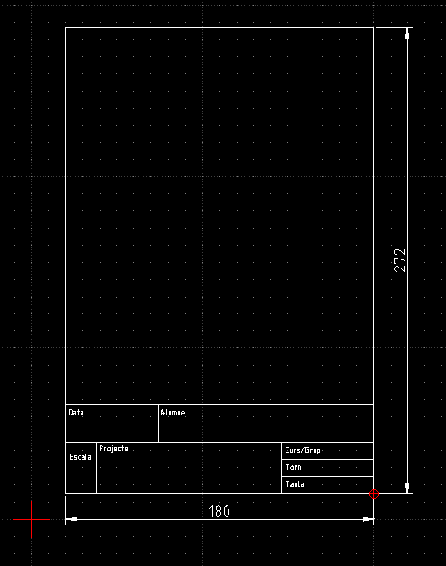
Dibuixem el caixetí, sense dibuixar les seves cotes !
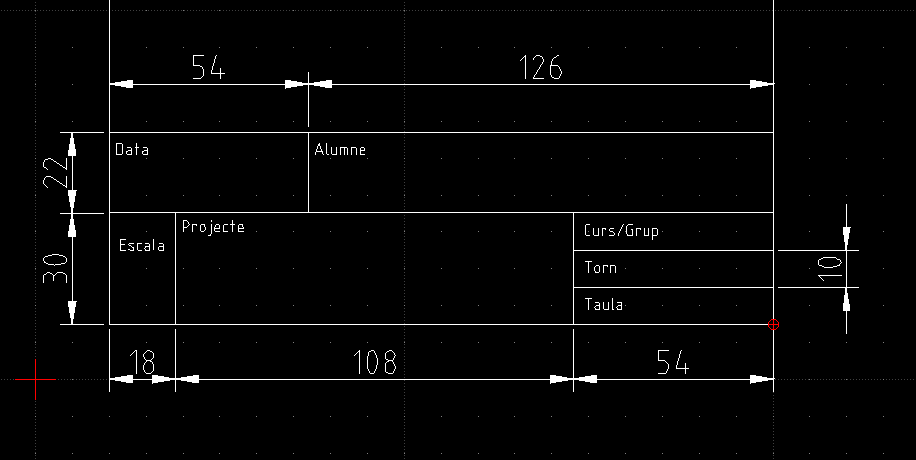
Anem a Edita → Preferències del dibuix actual , i a la pestanya Graella canviem l’espaiat a 1 mm, tant horitzontal com vertical, per col·locar millor el text
Seleccionem l’eina Text, i posem el text a cada espai. Podem canviar la posició del text clicant sobre ell. Podeu afegir ja el vostre nom i curs.
Anem a Visualitza → Zoom automàtic per que sigui la visualització per defecte de la nova plantilla
Desem l’arxiu i tanquem.
D’ara en endavant farem servir aquesta plantilla per a la resta d’exemples.
Show code cell source
from IPython.display import YouTubeVideo
YouTubeVideo('OJE1hQC4xyc')
Cercles i clonacions#
Anem a Fitxer → Nou des de plantilla i seleccionem el fitxer A4v que vam crear anteriorment. Desem el dibuix amb el nom portabroques. Anem a dibuixar les vistes d’un suport per broques:
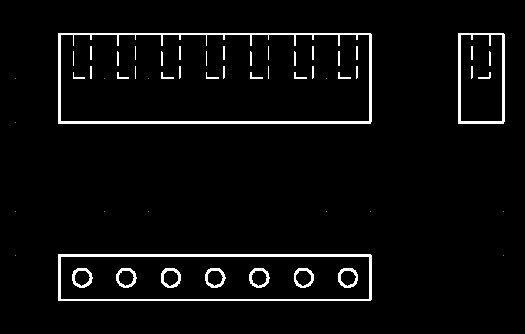
Dibuixem a la capa DIBUJO el rectangle inferior ( 70 x 10 mm) començant per la cantonada inferior esquerra, a la que tornarem en acabar.
Anem a dibuixar el primer cercle. Anem a l’eina Circumferència → Centre, punt. Posem @5,5 com a centre, i 2 de radi.
Per estalviar feina, clonarem aquest cercle per fer els 6 següents. Seleccionem el cercle i fem Modifica → Mou / Copia. Com a punt de referència cliquem al punt de la graella situat sota el cercle a la seva dreta. Com a punt de destí clicarem el punt de la graella situat 10 mm a la seva dreta. Seleccionem Còpies múltiples, posem 6 i cliquem a Ok.
Ara dibuixem els rectangle superiors a sobre ( 70 x 20 mm i 10 x 20 mm).
Anem a la capa DISCONTINUAS. Dibuixem les línies ocultes (alçada de 10 mm). Podem clonar-les de la mateixa forma.
Seleccioneu les vistes i amb la mateixa eina Modifica → Mou / Copia les col·loqueu de forma agradable a la pàgina, amb l’opció Suprimeix l’original.
Ara a la capa caixetí ompliu les dades Escala (1:1), Projecte (Suport de broques) i Data.
Tornem a desar el dibuix i el tanqueu.
Show code cell source
from IPython.display import YouTubeVideo
YouTubeVideo('F-5iPh6s6as')
Peces compostes#
Anem a fer una peça força més complicada:
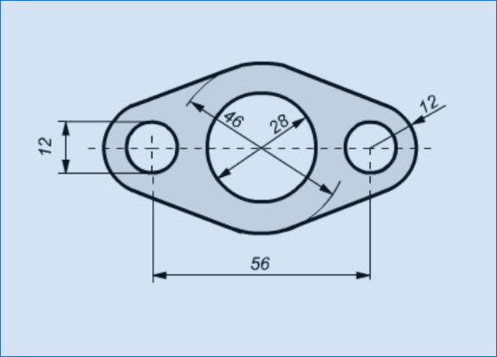
Comencem un nou dibuix amb la plantilla A4v. El desem amb el nom composta.
Seleccionem la capa DIBUJO. Dibuixem els 6 cercles:
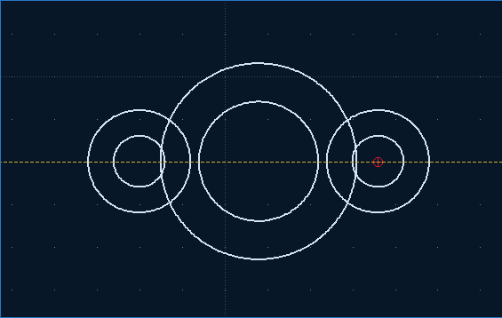
Deixem només seleccionada l’opció força a la selecció:
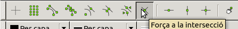
Anem a l’eina Línies → Tangent (C,C). Seleccionem cada parella de circumferències que volem unir amb tangents.
Anem a l’eina Modifica → Divideix. Seleccionem cada circumferència de la qual volem eliminar un fragment.
Seleccionem i esborrem els fragments que sobren. Ja podem tornar a activar la selecció per graella i per extrems.
Seleccionem la capa COTAS. Acotem la peça. Com veureu, no és fàcil. Aquí teniu una possible solució:
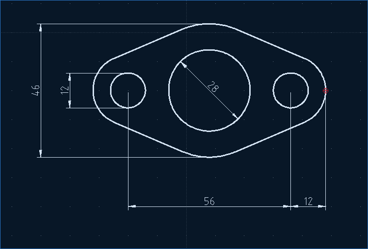
Desem l’arxiu i el tanquem.
Show code cell source
from IPython.display import YouTubeVideo
YouTubeVideo('HxlLXJJQXzk')
Blocs i biblioteques#
Moltes vegades ens interessa reutilitzar elements ja dibuixats. Per exemple, si volem dissenyar un joc de dominó, hem de repetir diverses vegades els mateix dibuixos.
Crearem un fitxer nou des de la plantilla A4v.
Seleccionem la capa DIBUJO i farem un model amb totes les combinacions possibles de punts i el marc de mitja fitxa (aquest el podem fer amb l’eina rectangle a línies):
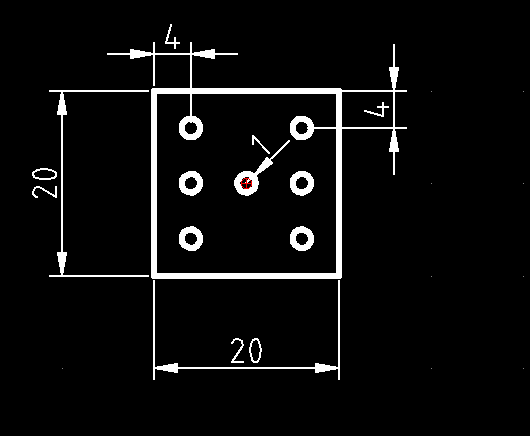
Seleccionem el dibuix de la mitxa fitxa blanca (el rectangle), i en fem una còpia. Amb la còpia encara seleccionada, cliquem la icona crea un bloc a la llista de blocs:
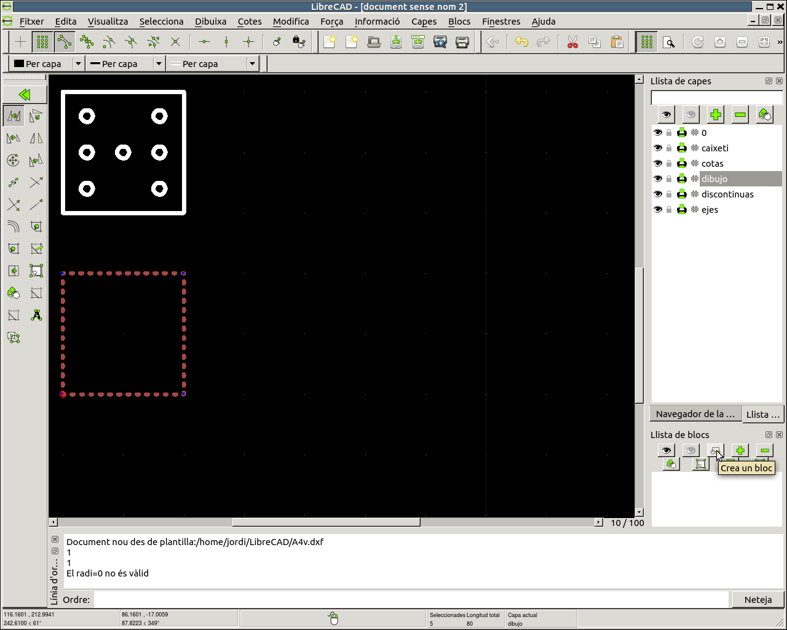
i el desem amb el nom D0, escollint com a referència una cantonada del rectangle.
Fem el mateix amb la resta de mitges fitxes: D1, D2 … D6, seleccionant els punts necessaris en cada cas:
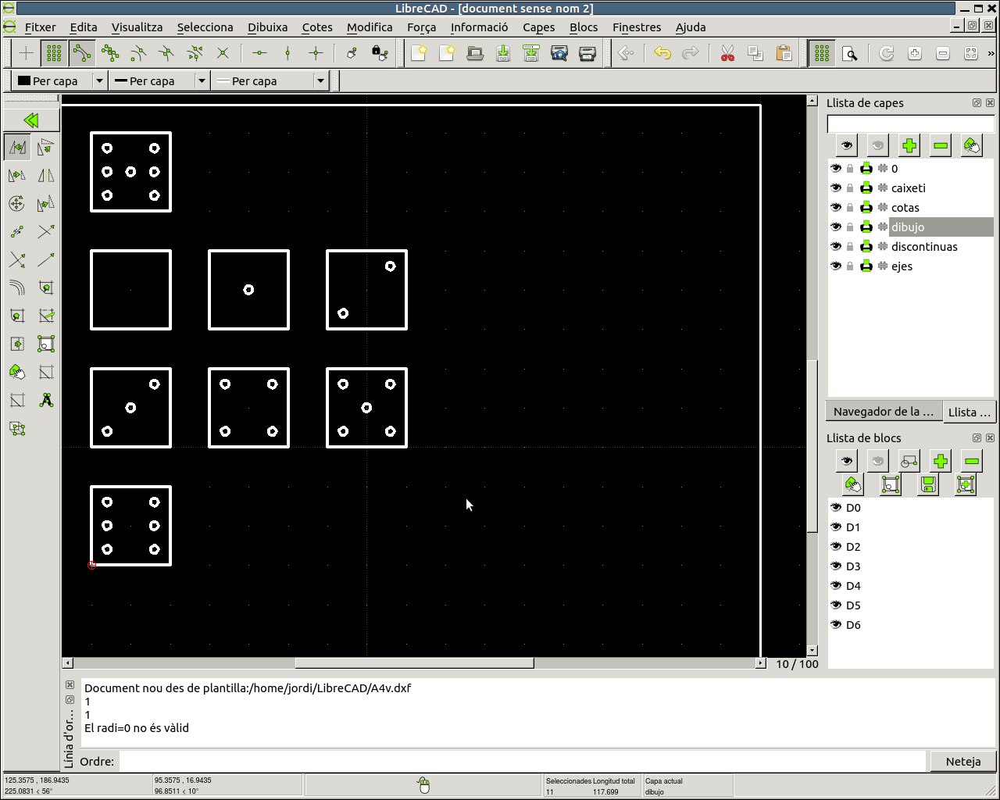
Desem l’arxiu amb el nom domino1.
Si us fixeu, ara amb la icona insereix el bloc actiu de la llista de blocs podem seleccionar un bloc i fer tantes còpies com vulguem.
Creació d’una biblioteca#
El problema és que aquests blocs tan útils només existeixen a l’arxiu domino1, i em serien molt útilsa altres arxius que vull fer. Per això hem de crear una biblioteca a partir d’aquests blocs.
Primer hem de crear una carpeta per a les nostres biblioteques, si encara no ho hem fet, i registrar aquesta carpeta al programa. Anem a la nostra carpeta LibreCAD i fem una carpeta nova amb el nom lib. Dintre de la carpeta lib hem de crear una nova carpeta amb el nom de la nostra nova biblioteca, domino:
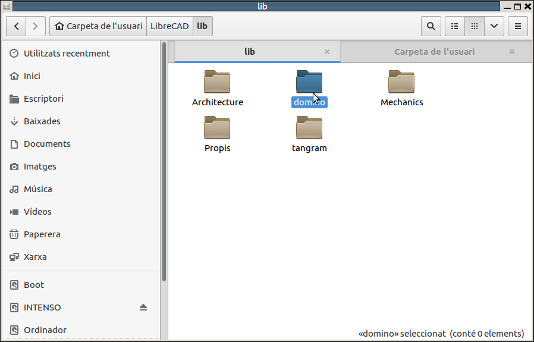
ara anem a Preferències de l’aplicació → Camins i posem a Biblioteques de components l’adreça de la carpeta lib, en el meu cas /home/jordi/LibreCAD/lib. En el vostre cas és molt probable que sigui /home/vianet/LibreCAD/lib:
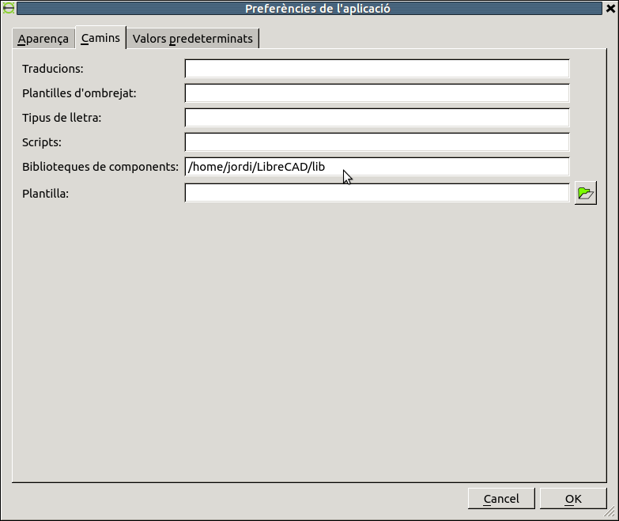
Ara seleccionem un a un els blocs que hem creat a la llista de blocs i amb la icona desa el bloc actiu en un fitxer els anem desant amb el mateix nom a la nostra carpeta domino:
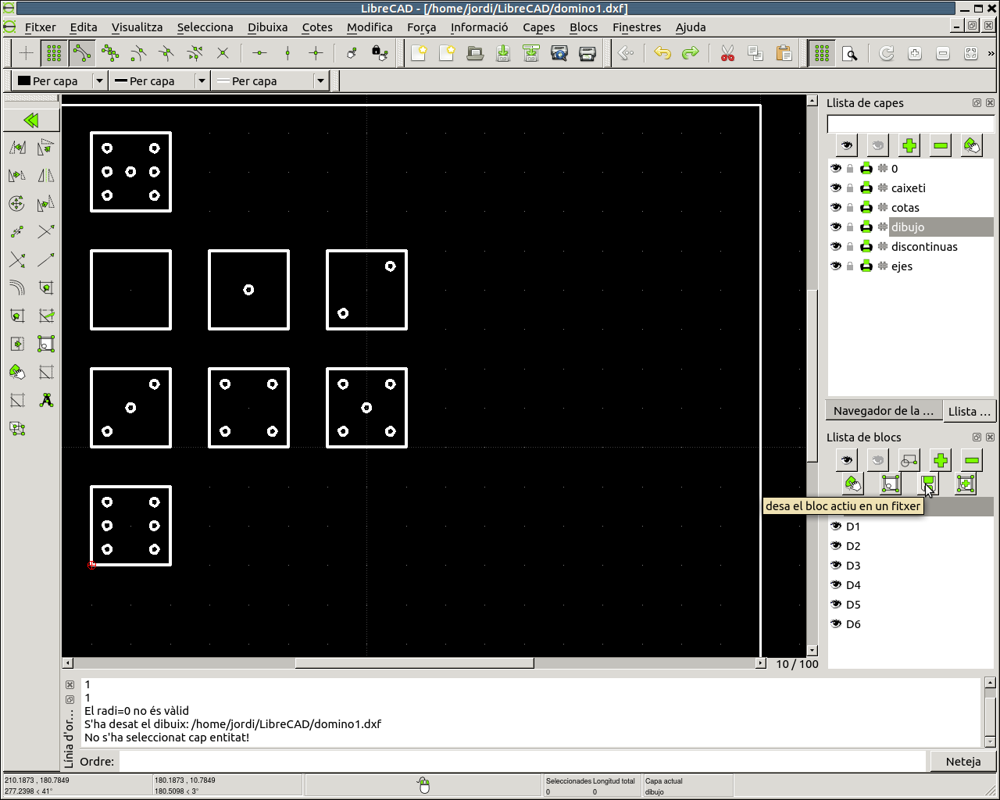
Per poder accedir a la nova biblioteca cal reiniciar el programa, així que desem l’arxiu i tanquem el LibreCAD.
Obrim de nou el LibreCAD i fem un nou arxiu des de la plantilla A4v. El desem amb el nom domino2. Comproveu en quina carpeta es desa, és possible que surti per defecte la carpeta de la vostra biblioteca, cal torna a la carpoeta LibreCAD. Seleccionem la capa DIBUJO.
Amb el navegador de biblioteca obert (tal vegada us caldrà activar aquesta finestra al menú Barres d’eines) busquem la nostrea biblioteca domino (el LibreCAD porta una serie de biblioteques ja instal·lades)
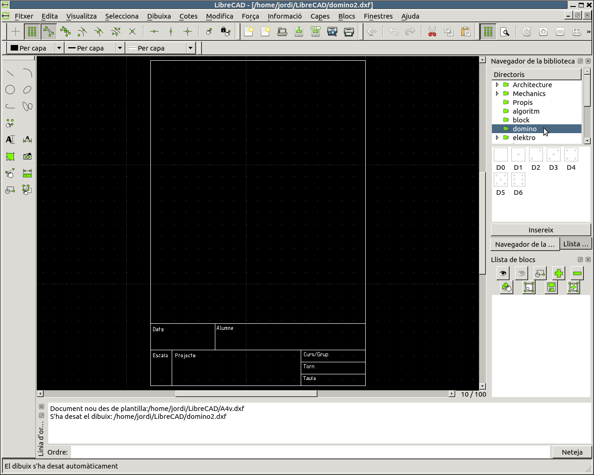
Seleccionem una figura, cliquem a Insereix, i anem fent còpies fins tenir les primeres 20 fitxes del nostre domino:
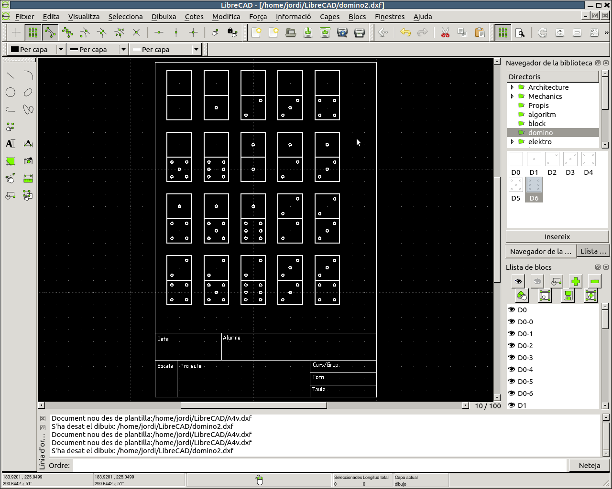
Fixeu-vos que quan inserim el dibuix podem canviar la seva escala i angle de gir.
Desem i tanquem l’arxiu. Fem un altre arxiu amb la mateixa plantilla, el desem amb el nom domino3 i fem la resta de fitxes
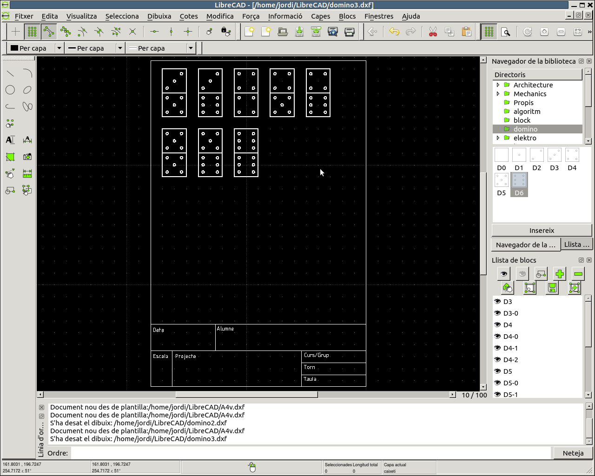